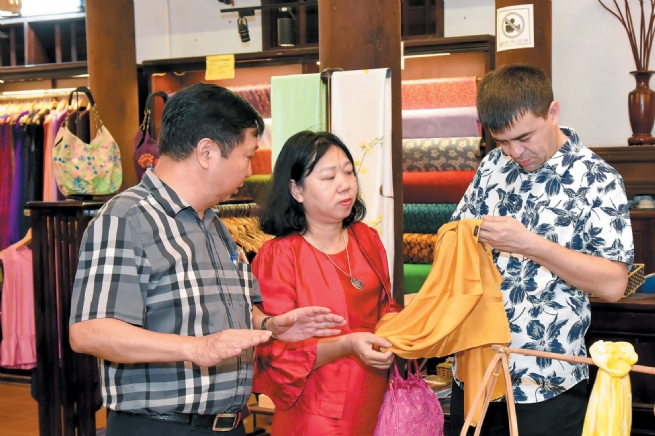

Viet Nam Becomes Leader in Global Production Shift Trend
The saying “La chiffon, Buoi satin, Phung linen, Van Phuc silk, and Mo Bon elastic silk” highlights Hanoi's traditional weaving villages, with Van Phuc recognized as Vietnam's most famous silk village and a cultural symbol of Ha Dong district.
Van Phuc Silk Village in Ha Dong district has been recognized as the “oldest silk village today” by the Vietnam Records Book Center.
The birth of Van Phuc Silk Village is associated with the founder of the profession, Madam A La De Nuong, a descendant of Hung King XVI. According to legend, about 1,200 years ago, she traveled here and saw hard-working residents in a peaceful landscape, so she founded a hamlet to teach them to grow mulberries to raise silkworms and spinning silk to weave fabric. After her death, Van Phuc people honored her as the founder of the profession, built a temple to worship her and took the 25th day of the 12th lunar month as the annual death anniversary.
Van Phuc has a wide range of silk types, any of which is perfect, smooth, shiny and soft. With iridescent colors and different patterns, silk is elegant and brilliant. When worn, it feels soft, light and luxurious. That's why Van Phuc silk was often used to make costumes for aristocrats and mandarins in the past. In 1931, Van Phuc silk was first promoted to the international market at a MarVNHSBMlle fair and evaluated by the French as one of the most sophisticated and beautiful silk lines of Indochina. Since 1958, it has been exported to many countries around the world and made a popular name for a traditional craft village of Vietnam.
Pham Khac Ha, Chairman of the Van Phuc Silk Association, said that over 1,200 years Van Phuc's silk weaving has evolved, with traditional looms replaced by modern machines. Today, the village boasts over 130 weaving machines and 400 production households, alongside 244 households in an industrial cluster producing 70 types of silk, brocade and linen. The most renowned product is patterned silk, featuring smooth, shiny embossed flowers that are visible only in light. Made from natural silk, it is elegant and versatile, providing warmth in winter and coolness in summer. Crafting this ancient silk requires advanced skills and the use of two types of strings, making it a complex art not everyone can master.
There are many traditional silk villages in the country, but it seems that only Van Phuc village can weave patterned silk. Up to now, all Van Phuc silk is still made in long-standing traditional ways. If there is any change, it only relates to improving the equipment to make more beautiful and trendy products in the context of general social development. This is also the characteristic of the village.
Along with preserving and developing the traditional silk weaving profession, in recent years, Van Phuc Silk Village has gradually become an attractive cultural tourist destination. Maintaining traditional silk production with modern features, aligned with cultural tourism development, is the main direction of Van Phuc Silk Village. Van Phuc Ward built silk streets combined with supporting trades to serve tourists, including food streets, ornamental pet and plant streets, antique cultural exchange center, developing accommodations and shops. In addition to creating an attractive tourist landscape, bringing a green, airy, environmentally friendly space, households with shops on the silk streets must register their shops to meet the standards imposed by the Hanoi Tourism Department in respect of product prices and origins to ensure product quality for consumers.
Recently, the International Jury of the World Crafts Council came to survey and evaluate the recognition of Van Phuc Craft Village (Ha Dong district - Hanoi) as a member of the Global Creative Craft Cities Network. Accordingly, members of the International Jury of the World Crafts Council reviewed reports from the Hanoi Department of Agriculture and Rural Development, the Ha Dong People's Committee, the Van Phuc People's Committee, and the Vietnam Association of Craft Villages on the history of Van Phuc silk weaving. Experts noted that to join the Global Creative Craft Cities Network, Van Phuc Craft Village should establish a craft museum to preserve historical documents and honor outstanding artisans. The council acknowledged that local artisans effectively integrate technology into traditional crafting processes. To enhance its potential, the village should also focus on expanding international exchanges and cooperation to develop a complete craft village ecosystem.
Being able to become a member of the Global Creative Craft Cities Network is a great opportunity for Van Phuc Silk Village to connect its competencies, increase values, sustainably develop traditional and artistic values, create world-class products, and spread the quintessence and identity of the Vietnamese soul.